这一讲要把图像分类的完整因果链串起来：图像先表示为带通道的张量；卷积核在局部区域共享参数，逐层把像素组合成边缘、纹理、部件和语义特征；池化或步幅卷积降低空间分辨率；分类头把特征映射成类别 logits；损失函数、反向传播和优化器共同学习卷积核。
学完后，你应该能独立回答这些问题：
- RGB 图像的 HWC 与 PyTorch 的 NCHW 分别表示什么？
- 卷积为什么比把整张图直接送入全连接层更适合处理图像？
- 单通道、多通道和多卷积核计算怎样统一成一个公式？
kernel_size、padding、stride、dilation如何共同决定输出尺寸与感受野？- 卷积层和全连接层的参数量怎样计算？
- 最大池化、平均池化、全局池化和自适应池化分别解决什么问题？
Conv2d、MaxPool2d、AdaptiveAvgPool2d与interpolate怎样正确使用？- 怎样把 CIFAR-10 数据准备、模型搭建、训练、验证、保存和测试连成一个规范闭环？
- 如何根据训练/验证曲线定位欠拟合、过拟合和优化问题？
- CAM 为什么能指出模型完成某个类别判断时关注的区域？
一、先把图像看成张量
1. 像素、灰度与 RGB 通道
数字图像由规则网格上的像素组成。常见 8 位图像每个通道的整数取值为 $[0,255]$：0 表示该通道没有亮度贡献，255 表示贡献最大。
- 灰度图：通常是
[H, W]或[H, W, 1]，每个像素只有一个亮度值； - RGB 彩色图：通常是
[H, W, 3]，最后三个数依次表示红、绿、蓝分量； - RGBA 图：在 RGB 后增加 Alpha 透明度通道，形状通常为
[H, W, 4]。
“像素值一定是 0～255”只适用于常见整数图像。进入深度学习管线后，图像经常被转换为 float32，缩放到 $[0,1]$，再按训练集统计量标准化，因此模型实际看到的数值可以小于 0 或大于 1。
2. 用 Matplotlib 读取和显示图像
from pathlib import Path import matplotlib.pyplot as plt image = plt.imread(Path("data/sample.png")) print("shape:", image.shape) print("dtype:", image.dtype) print("range:", image.min(), image.max()) if image.ndim == 2: plt.imshow(image, cmap="gray") else: plt.imshow(image) plt.axis("off") plt.show()
plt.imread 的返回范围与文件格式、后端和数据类型有关：PNG 常见为 $[0,1]$ 的浮点数，JPEG 也可能返回 uint8 的 $[0,255]$。不要只凭经验假设，先检查 dtype、最小值和最大值。
全 0 RGB 数组显示为黑色，全 255 的 uint8 RGB 数组显示为白色：
import matplotlib.pyplot as plt import numpy as np black = np.zeros((200, 200, 3), dtype=np.uint8) white = np.full((200, 200, 3), 255, dtype=np.uint8) fig, axes = plt.subplots(1, 2, figsize=(6, 3)) axes[0].imshow(black) axes[0].set_title("black") axes[1].imshow(white) axes[1].set_title("white") for axis in axes: axis.axis("off") plt.show()
3. HWC、CHW 与 NCHW
图像库常用 HWC，PyTorch 卷积层常用 NCHW：
| 记号 | 含义 | 典型形状 |
|---|---|---|
| HWC | 高、宽、通道 | NumPy/Matplotlib 彩色图 [32, 32, 3] |
| CHW | 通道、高、宽 | 单张 PyTorch 图像 [3, 32, 32] |
| NCHW | 批量、通道、高、宽 | 卷积层输入 [N, 3, 32, 32] |
import numpy as np import torch image_hwc = np.random.randint(0, 256, (32, 32, 3), dtype=np.uint8) image_chw = torch.from_numpy(image_hwc).permute(2, 0, 1).float() / 255.0 batch_nchw = image_chw.unsqueeze(0) print(image_chw.shape) # [3, 32, 32] print(batch_nchw.shape) # [1, 3, 32, 32]
OpenCV 默认按 BGR 读取，而 Matplotlib/PIL 通常按 RGB 解释。用 OpenCV 读取后应显式转换：
import cv2 import torch image_bgr = cv2.imread("data/sample.jpg") if image_bgr is None: raise FileNotFoundError("data/sample.jpg") image_rgb = cv2.cvtColor(image_bgr, cv2.COLOR_BGR2RGB) image_rgb = image_rgb.copy() # 保证正 stride 和连续内存 tensor_chw = torch.from_numpy(image_rgb).permute(2, 0, 1).float() / 255.0
直接使用 image_bgr[:, :, ::-1] 会产生负 stride 的 NumPy 视图，torch.from_numpy 可能拒绝它；.copy() 或 np.ascontiguousarray 可以创建兼容存储。
4. 归一化、标准化与数据泄漏
常见预处理分两步：
- 把
uint8像素从 $[0,255]$ 缩放到 $[0,1]$； - 按通道执行 $(x-\mu)/\sigma$。
均值和标准差只能由训练集估计，再原样用于验证集和测试集。对全数据统计会把测试信息泄漏给训练过程。对现代 CNN，直接在像素上做 PCA 并不是常规必需步骤；更常见的是数据增强、通道标准化和由卷积层自动学习特征。
二、CNN 为什么适合图像
1. 骨架网络与任务头
卷积神经网络是含卷积运算的神经网络。以图像分类为例，通常可以拆成两部分：
- 骨架网络（backbone）：卷积、激活、归一化和下采样层逐步提取特征；
- 分类头（classification head）：把最终特征汇总并输出每个类别的 raw logits。
池化层和全连接层很常见，但不是 CNN 的硬性组成条件。现代网络可能用步幅卷积替代池化，用全局平均池化替代大规模全连接层，还可以在同一骨架后连接检测、分割或关键点任务头。
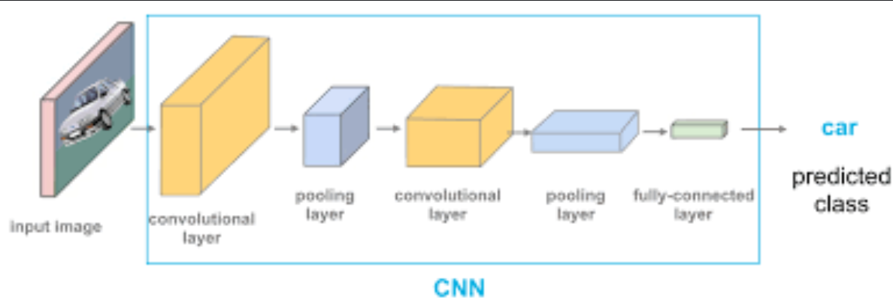
2. 四个关键归纳偏置
- 局部连接：一个输出位置只观察输入的局部窗口，适合捕捉边缘、角点和纹理；
- 权重共享：同一卷积核在所有空间位置复用，参数量远少于同尺寸全连接层；
- 层次组合：浅层组合像素形成边缘和纹理，深层继续组合成部件、形状和语义；
- 平移等变性：输入平移时，特征图会相应平移。卷积本身不是严格的“平移不变”；池化、全局聚合和数据增强才会带来一定的近似不变性。
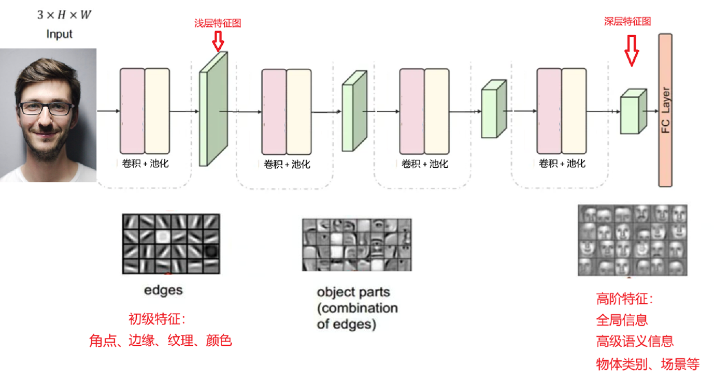
卷积层不仅能减少参数，还保留二维邻域结构。把图像直接展平会破坏“哪些像素彼此相邻”的显式结构，并让参数量随图像尺寸迅速增长。
3. 特征图与 CAM
每个输出通道都是一张特征图，表示某种模式在各空间位置的响应强度。浅层特征往往容易观察成边缘或纹理，深层通道更像多个低阶模式的组合，单独一个通道未必对应人能直接命名的概念。
对于“最后一层卷积 → 全局平均池化 → 线性分类器”的结构，类别 $c$ 的 CAM 可写成：
$$ M_c(i,j)=\sum_k w_k^{(c)}A_k(i,j) $$
$A_k$ 是第 $k$ 个末层特征图，$w_k^{(c)}$ 是分类器中类别 $c$ 对该通道的权重。把 $M_c$ 上采样到原图大小并叠加，就能看到哪些区域最支持当前类别。
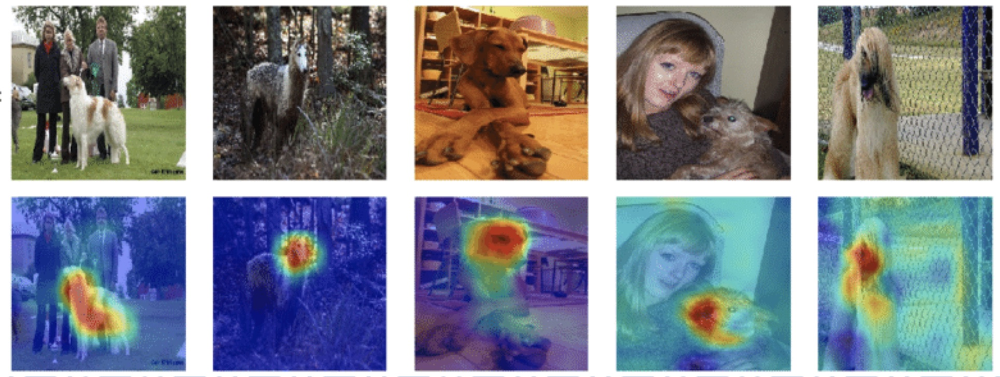
CAM 是按类别生成的解释，不等于目标检测框，也不证明模型真正理解了物体。若模型结构不满足“GAP + 线性分类器”的条件，通常使用 Grad-CAM 等梯度加权方法。
三、卷积计算：局部加权求和
1. 深度学习里的“卷积”实际是互相关
对单通道输入 $X$ 和卷积核 $K$，深度学习框架通常计算：
$$ Y_{i,j}=\sum_{u=0}^{K_h-1}\sum_{v=0}^{K_w-1}X_{i+u,j+v}K_{u,v}+b $$
卷积核滑到一个局部窗口后，对应元素相乘再求和。数学卷积还会把核翻转，而 PyTorch Conv2d 不翻转，严格来说计算的是互相关。因为卷积核参数由数据学习，是否预先翻转不会限制模型表达，所以深度学习中仍习惯称为卷积。
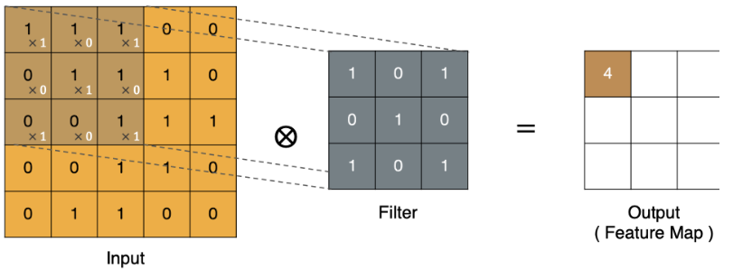
2. 手写二维互相关
import torch def cross_correlation_2d(image, kernel): out_h = image.shape[0] - kernel.shape[0] + 1 out_w = image.shape[1] - kernel.shape[1] + 1 output = torch.empty((out_h, out_w), dtype=torch.float32) for row in range(out_h): for col in range(out_w): window = image[ row : row + kernel.shape[0], col : col + kernel.shape[1], ] output[row, col] = (window * kernel).sum() return output image = torch.tensor( [ [1, 1, 1, 0, 0], [0, 1, 1, 1, 0], [0, 0, 1, 1, 1], [0, 0, 1, 1, 0], [0, 1, 1, 0, 0], ], dtype=torch.float32, ) kernel = torch.tensor( [[1, 0, 1], [0, 1, 0], [1, 0, 1]], dtype=torch.float32, ) print(cross_correlation_2d(image, kernel))
3. 固定滤波器与可学习卷积核
高斯核、Sobel 核等传统滤波器由人预先设定，可完成平滑或边缘检测。CNN 的卷积核是待训练参数：初始值通常随机，反向传播根据任务损失自动调整。两者计算形式相同，区别在于参数从哪里来。
四、输出尺寸、填充、步幅、膨胀与感受野
1. 通用输出尺寸公式
对单个空间维度，卷积输出大小为：
$$ L_{out}=\left\lfloor \frac{L_{in}+2P-D(K-1)-1}{S} \right\rfloor+1 $$
- $L_{in}$：输入高或宽；
- $K$：卷积核大小；
- $P$：两侧填充；
- $S$：步幅；
- $D$：dilation，核元素之间的间隔；
- $\lfloor\cdot\rfloor$：向下取整。
高和宽不相等时分别计算；参数是二元组时也分别代入。常见简化式 $(L-K+2P)/S+1$ 只对应 dilation 为 1，并且仍不能省略向下取整。
from math import floor def conv_output_size(length, kernel, stride=1, padding=0, dilation=1): effective_kernel = dilation * (kernel - 1) + 1 return floor((length + 2 * padding - effective_kernel) / stride) + 1 print(conv_output_size(5, kernel=3, stride=1, padding=1)) # 5 print(conv_output_size(7, kernel=3, stride=2, padding=0)) # 3
2. Padding：保护边缘并控制尺寸
不填充时，边缘像素参与卷积的次数少于中心像素，输出尺寸也会缩小。零填充在输入边界外补 0，可控制输出尺寸并让边缘信息得到更多计算机会。
当 $S=1$、$D=1$ 且卷积核为奇数时，令 $P=(K-1)/2$ 可保持高宽不变，这常被称为 same 卷积。PyTorch 也支持部分场景下的 padding="same"，但手算尺寸仍应掌握通用公式。
3. Stride：下采样与计算量
步幅决定卷积核每次移动多少像素。增大步幅会减少滑动次数、降低输出分辨率和计算量，同时扩大相邻输出对应输入区域的间隔；代价是更容易丢失细节和产生混叠。需要快速下采样时可使用步幅卷积，但不能把“分辨率更小”误认为“特征一定更好”。
4. Dilation：不增加核参数地扩大视野
dilation 为 2 的 $3\times3$ 核，有效覆盖范围为 $5\times5$：
$$ K_{eff}=D(K-1)+1 $$
空洞卷积常用于分割等需要较大上下文、又不希望过快降低分辨率的任务。dilation 太大可能产生栅格效应。
5. 为什么常用奇数核，但偶数核也合法
奇数核有明确中心，配合对称 padding 容易保持输入与输出位置对齐，因此 $3\times3$、$5\times5$ 最常见。偶数核没有单一中心，做严格对称的 same 对齐时会出现半像素语义偏移，但 2×2、4×4 卷积完全可以计算，也被部分模型使用。正确结论是“奇数核更方便”，而不是“偶数核不能用”。
6. 感受野如何逐层扩大
某层一个输出单元在原始输入上能影响到的区域称为感受野。若第 $l$ 层有效核大小为 $K_l^{eff}$、步幅为 $S_l$，可递推：
$$ j_l=j_{l-1}S_l,\qquad r_l=r_{l-1}+(K_l^{eff}-1)j_{l-1} $$
$j_l$ 是相邻特征点映射回输入的间隔，$r_l$ 是理论感受野。两层 $3\times3$、stride 1 卷积的感受野为 $5\times5$；第三层继续扩大到 $7\times7$。堆叠小卷积核既扩大感受野，又在层间加入更多非线性。
def receptive_field(layers): jump = 1 field = 1 for kernel, stride, dilation in layers: effective = dilation * (kernel - 1) + 1 field += (effective - 1) * jump jump *= stride return field, jump print(receptive_field([(3, 1, 1), (3, 1, 1)])) # (5, 1) print(receptive_field([(3, 2, 1), (3, 2, 1)])) # (7, 4)
五、多通道卷积、多卷积核与参数量
1. 一个输出通道如何融合所有输入通道
若输入有 $C_{in}$ 个通道，一个标准卷积核也必须有 $C_{in}$ 个通道。每个核通道与对应输入通道做二维互相关，再把所有通道结果相加并加一个偏置，得到一个输出通道：
$$ Y_{o,i,j}=b_o+ \sum_{c=0}^{C_{in}-1} \sum_{u=0}^{K_h-1} \sum_{v=0}^{K_w-1} W_{o,c,u,v}\,X_{c,iS_h+u,jS_w+v} $$
这里先省略了 padding 和 dilation 的索引细节。关键关系是：标准卷积的每个输出通道都会融合全部输入通道。
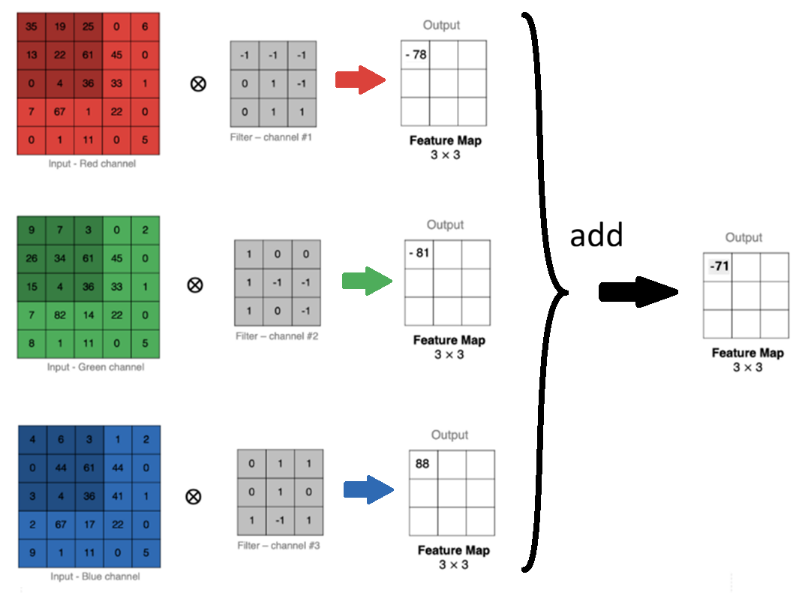
2. 多个卷积核产生多个输出通道
要提取多种特征，就使用多组卷积核。每组核产生一个输出通道，最后沿通道维堆叠：
$$ [N,C_{in},H,W] \longrightarrow [N,C_{out},H_{out},W_{out}] $$
例如输入 128 通道、希望输出 256 通道，标准卷积需要 256 组核；每组核包含 128 个二维核面。每个输出通道共享一个偏置，而不是每个输入通道各有一个偏置。
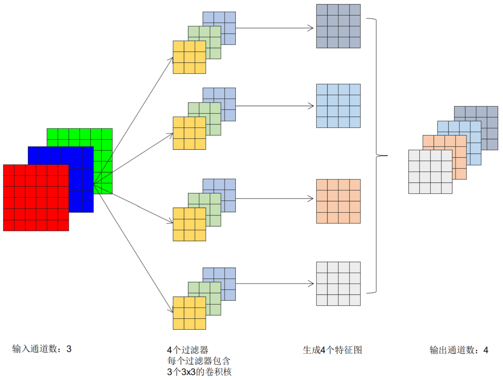
在 PyTorch 中：
import torch import torch.nn as nn conv = nn.Conv2d( in_channels=3, out_channels=16, kernel_size=3, stride=2, padding=1, dilation=1, bias=True, ) x = torch.randn(8, 3, 32, 32) y = conv(x) print(y.shape) # [8, 16, 16, 16] print(conv.weight.shape) # [16, 3, 3, 3] print(conv.bias.shape) # [16]
3. 卷积层参数量
标准卷积（groups=1）参数量为：
$$ C_{out}(C_{in}K_hK_w+1) $$
最后的 1 表示每个输出通道一个偏置；bias=False 时去掉。分组卷积的通用形式为：
$$ C_{out}\left(\frac{C_{in}}{G}K_hK_w+\mathbb{1}_{bias}\right) $$
其中 $G$ 是 groups。参数量与输入的高、宽无关，但计算量会随输出空间尺寸增长。
import torch.nn as nn def count_parameters(module): return sum(parameter.numel() for parameter in module.parameters()) standard = nn.Conv2d(128, 256, kernel_size=3, padding=1) grouped = nn.Conv2d(128, 256, kernel_size=3, padding=1, groups=8) print(count_parameters(standard)) print(count_parameters(grouped))
全连接层 Linear(in_features, out_features) 含偏置时参数量为：
$$ (in_features+1)\times out_features $$
4. 1×1 卷积为什么有用
1×1 卷积在每个空间位置上对通道做线性组合。stride 为 1、padding 为 0 时，它不改变高和宽，但可以：
- 升维或降维通道；
- 融合通道信息；
- 在深度可分离卷积中充当 pointwise convolution；
- 配合激活函数增加通道方向上的非线性变换。
5. 常见卷积变体
| 类型 | 核心做法 | 主要用途或限制 |
|---|---|---|
| 分组卷积 | 把通道分为 groups 组，各组独立卷积 |
减少参数和计算；组间信息需后续融合 |
| 深度卷积 | groups=C_in，每个输入通道独立卷积 |
不直接融合通道；常与 1×1 卷积配对 |
| 深度可分离卷积 | depthwise K×K + pointwise 1×1 |
移动端网络常用，显著降低计算量 |
| 空间可分离卷积 | 把 K×K 分解为 K×1 与 1×K |
只有满足可分离约束或作为学习近似时才等价 |
| 空洞卷积 | 核元素之间插入间隔 | 扩大感受野而不增加核参数 |
| 转置卷积 | 在可学习核下扩大空间尺寸 | 可学习上采样，不是普通卷积的真正逆运算 |
| 可变形卷积 | 为采样位置学习偏移 | 适应物体几何形变，结构更复杂 |
| 动态卷积 | 根据输入生成或组合卷积核 | 提升条件适应能力，计算和实现更复杂 |
Conv1d / Conv3d |
在一维序列或三维体数据上滑动 | 音频、时序、视频、CT/MRI 等 |
import torch.nn as nn depthwise = nn.Conv2d(32, 32, kernel_size=3, padding=1, groups=32) pointwise = nn.Conv2d(32, 64, kernel_size=1) depthwise_separable = nn.Sequential(depthwise, pointwise) dilated = nn.Conv2d(64, 64, kernel_size=3, padding=2, dilation=2) transposed = nn.ConvTranspose2d(64, 32, kernel_size=4, stride=2, padding=1)
六、池化、全局池化与上采样
1. 最大池化与平均池化
池化层在局部窗口内做固定聚合，没有可训练权重：
- 最大池化：保留窗口中的最大响应，突出最强特征；
- 平均池化：保留窗口均值，得到更平滑的摘要。
池化常用于降低特征图尺寸、减少后续计算和内存，并对小范围位置变化提供一定鲁棒性；代价是丢失精细空间信息。它不是“参数降维”的唯一选择，步幅卷积也能下采样，并且参数可学习。
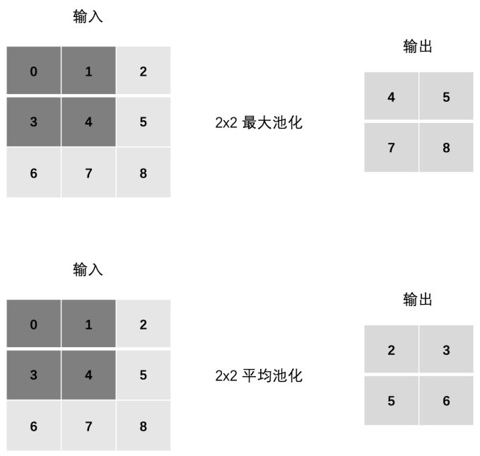
2. 池化怎样处理通道
池化对每个输入通道独立操作，不会像标准卷积那样沿通道求和，因此通常满足：
$$ C_{out}=C_{in} $$
空间输出尺寸仍按窗口、步幅和填充计算。MaxPool2d 还支持 dilation；AvgPool2d 的 padding 是否计入平均值由 count_include_pad 控制。
import torch import torch.nn as nn x = torch.tensor( [[[[0, 1, 2], [3, 4, 5], [6, 7, 8]]]], dtype=torch.float32, ) max_pool = nn.MaxPool2d(kernel_size=2, stride=1) avg_pool = nn.AvgPool2d(kernel_size=2, stride=1) print(max_pool(x)) print(avg_pool(x))
3. 全局池化与自适应池化
全局平均池化（GAP）把每个通道的整张特征图压缩为一个均值，全局最大池化则保留一个最大值：
$$ [N,C,H,W]\rightarrow[N,C,1,1] $$
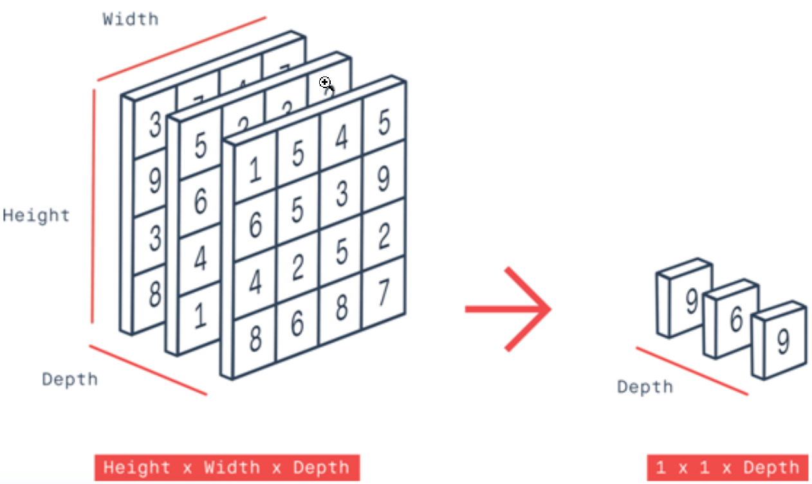
PyTorch 更常使用自适应池化表达目标输出大小，不需要手算当前窗口：
import torch import torch.nn as nn x = torch.randn(8, 128, 14, 14) gap = nn.AdaptiveAvgPool2d(1) gmp = nn.AdaptiveMaxPool2d(1) print(gap(x).shape) # [8, 128, 1, 1] print(gmp(x).shape) # [8, 128, 1, 1]
GAP 大幅减少分类头参数，并让网络更容易接收不同输入尺寸；但它会丢失精确位置，定位和分割任务通常需要保留或恢复空间结构。
4. 上采样、双线性插值与转置卷积
上采样把低分辨率特征恢复为更大空间尺寸，常见于分割、检测特征融合和超分辨率：
nearest：复制最近像素，速度快但容易出现块状边缘；bilinear：沿两个方向做线性插值，结果更平滑；bicubic：利用更大邻域，计算更重；- 转置卷积：可学习上采样，但核与步幅搭配不当可能产生棋盘格伪影。
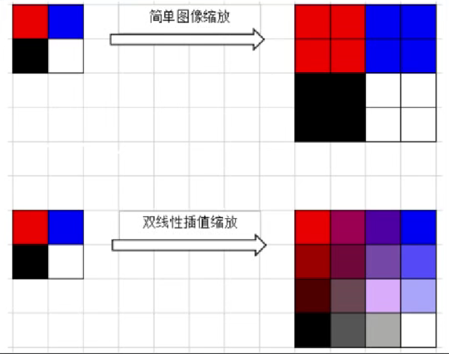
import torch import torch.nn as nn import torch.nn.functional as F x = torch.randn(4, 64, 16, 16) bilinear = F.interpolate( x, size=(32, 32), mode="bilinear", align_corners=False, ) learned_upsample = nn.ConvTranspose2d( 64, 32, kernel_size=4, stride=2, padding=1, ) print(bilinear.shape) # [4, 64, 32, 32] print(learned_upsample(x).shape) # [4, 32, 32, 32]
转置卷积单个维度的输出尺寸为：
$$ L_{out}=(L_{in}-1)S-2P+D(K-1)+output_padding+1 $$
align_corners=False 是一般图像缩放的常用选择；它使缩放关系不依赖输入角点的强行对齐。不要把插值放大误解为“恢复了原图中已经丢失的真实细节”。
七、Conv2d API 与尺寸追踪
1. 关键参数
import torch.nn as nn conv = nn.Conv2d( in_channels=3, out_channels=32, kernel_size=(3, 3), stride=(1, 1), padding=(1, 1), dilation=(1, 1), groups=1, bias=True, padding_mode="zeros", )
in_channels必须和输入C一致；out_channels等于卷积核组数，也就是输出特征图数；- 整数参数会同时用于高和宽，二元组可分别控制；
groups必须同时整除输入和输出通道数；- 输入通常是浮点 NCHW 张量，模型和数据必须位于同一设备。
2. 课件分类网络的自洽尺寸
下面统一采用 3→6→16、两个 3×3 无填充卷积和两个 2×2、stride 2 池化。只有在这组参数下，展平维数才是 576：
| 层 | 输出形状 | 参数量 |
|---|---|---|
| 输入 | [N, 3, 32, 32] |
0 |
Conv2d(3,6,3) |
[N, 6, 30, 30] |
$6(3×3×3+1)=168$ |
MaxPool2d(2,2) |
[N, 6, 15, 15] |
0 |
Conv2d(6,16,3) |
[N, 16, 13, 13] |
$16(6×3×3+1)=880$ |
MaxPool2d(2,2) |
[N, 16, 6, 6] |
0 |
Flatten(start_dim=1) |
[N, 576] |
0 |
Linear(576,120) |
[N, 120] |
69,240 |
Linear(120,84) |
[N, 84] |
10,164 |
Linear(84,10) |
[N, 10] |
850 |
总参数量为 81,302。如果把通道改为 4→8、加入 padding 或改变池化参数，展平维数必须重新计算，不能继续硬写 576。
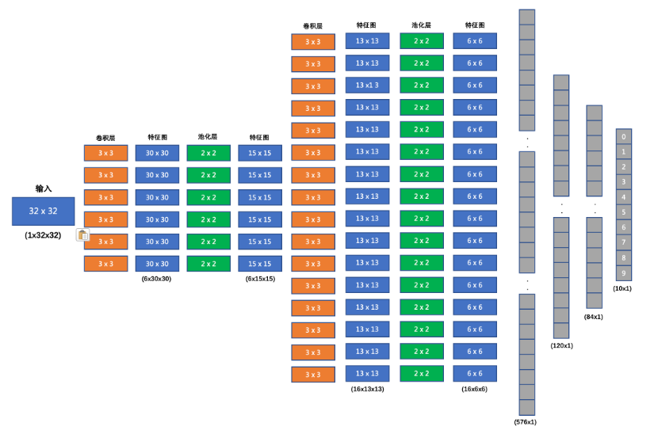
3. 一个完整且自洽的分类模型
import torch import torch.nn as nn class ImageClassification(nn.Module): def __init__(self, num_classes=10): super().__init__() self.features = nn.Sequential( nn.Conv2d(3, 6, kernel_size=3), nn.ReLU(), nn.MaxPool2d(kernel_size=2, stride=2), nn.Conv2d(6, 16, kernel_size=3), nn.ReLU(), nn.MaxPool2d(kernel_size=2, stride=2), ) self.classifier = nn.Sequential( nn.Linear(16 * 6 * 6, 120), nn.ReLU(), nn.Linear(120, 84), nn.ReLU(), nn.Linear(84, num_classes), ) def forward(self, x): x = self.features(x) x = torch.flatten(x, start_dim=1) return self.classifier(x) # raw logits，不做 Softmax model = ImageClassification() dummy = torch.randn(2, 3, 32, 32) print(model(dummy).shape) # [2, 10] print(sum(parameter.numel() for parameter in model.parameters())) # 81302
torch.flatten(x, start_dim=1) 必须保留 batch 维。若直接 x.flatten()，多个样本会被压成一个长向量。为了减少对固定输入尺寸的依赖，可以在分类头前加入 AdaptiveAvgPool2d，或在开发阶段用一次 dummy forward 核对形状。
八、CIFAR-10 数据集与数据管线
1. 数据集基本信息
CIFAR-10 是小型彩色图像分类数据集：
- 50,000 张训练图像、10,000 张测试图像；
- 10 个互斥类别，每类共 6,000 张；
- 每张图像为 $32\times32$ RGB；
- 类别依次为 airplane、automobile、bird、cat、deer、dog、frog、horse、ship、truck。
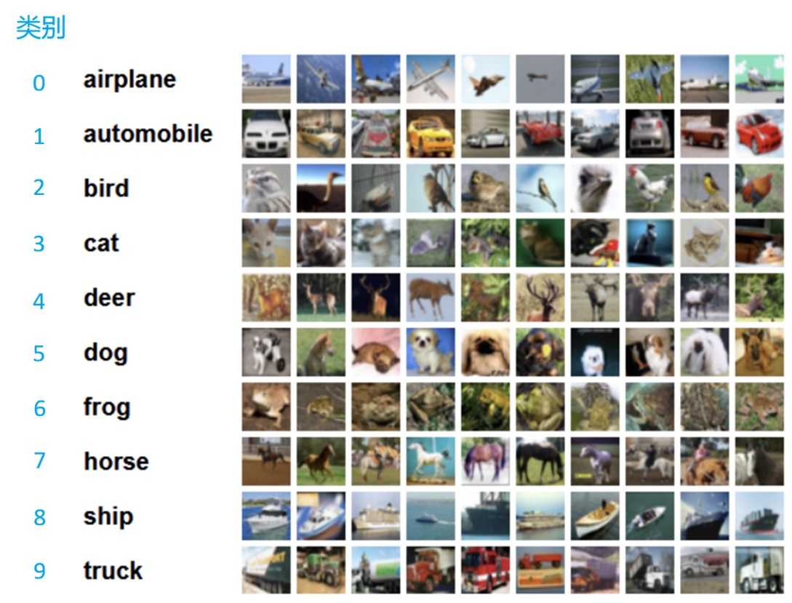
torchvision.datasets.CIFAR10 的 .data 是 HWC 的 NumPy 数组，.targets 是类别下标列表；经过 ToTensor 后，单张图像会变成 CHW 浮点张量。类别标签传给 CrossEntropyLoss 时应为 long 类型的 [N] 下标。
2. 训练增强与评估变换要分开
训练时可用随机裁剪和水平翻转增强泛化；验证和测试必须使用确定性变换。标准化统计量只应由训练数据估计。下面使用一组按 CIFAR-10 训练像素统计的常用通道值：
from torchvision import transforms CIFAR10_MEAN = (0.4914, 0.4822, 0.4465) CIFAR10_STD = (0.2470, 0.2435, 0.2616) train_transform = transforms.Compose( [ transforms.RandomCrop(32, padding=4), transforms.RandomHorizontalFlip(), transforms.ToTensor(), transforms.Normalize(CIFAR10_MEAN, CIFAR10_STD), ] ) eval_transform = transforms.Compose( [ transforms.ToTensor(), transforms.Normalize(CIFAR10_MEAN, CIFAR10_STD), ] )
如果环境中没有 torchvision，应安装与当前 torch 版本匹配的版本；二者版本不兼容会导致算子注册或导入错误。
水平翻转是否合理取决于任务语义：自然物体通常可用，文字、交通标志方向或医学左右侧任务可能不适合。数据增强只作用于训练样本。
3. 划分训练、验证与测试集
CIFAR-10 官方只提供 train/test。训练过程中调结构、学习率和轮数时，应从训练集再划出验证集，测试集只在最终模型确定后评估一次。
from pathlib import Path import torch from torch.utils.data import DataLoader, Subset from torchvision import datasets def make_cifar10_loaders(root="data", batch_size=128, num_workers=2): root = Path(root) train_full = datasets.CIFAR10( root=root, train=True, transform=train_transform, download=True, ) valid_full = datasets.CIFAR10( root=root, train=True, transform=eval_transform, download=True, ) test_set = datasets.CIFAR10( root=root, train=False, transform=eval_transform, download=True, ) generator = torch.Generator().manual_seed(42) indices = torch.randperm(len(train_full), generator=generator).tolist() valid_size = 5_000 valid_indices = indices[:valid_size] train_indices = indices[valid_size:] train_set = Subset(train_full, train_indices) valid_set = Subset(valid_full, valid_indices) pin_memory = torch.cuda.is_available() train_loader = DataLoader( train_set, batch_size=batch_size, shuffle=True, num_workers=num_workers, pin_memory=pin_memory, ) valid_loader = DataLoader( valid_set, batch_size=batch_size, shuffle=False, num_workers=num_workers, pin_memory=pin_memory, ) test_loader = DataLoader( test_set, batch_size=batch_size, shuffle=False, num_workers=num_workers, pin_memory=pin_memory, ) return train_loader, valid_loader, test_loader
课件示例使用 batch_size=8，这是为了便于演示，不是固定要求。批量大小受显存、吞吐、BatchNorm 稳定性和学习率共同影响，应通过实验选择。
九、训练、验证、保存与测试
1. 一次训练迭代发生什么
每个 mini-batch 依次执行：
- 把图像和标签移动到模型所在设备；
- 模型前向传播，输出 raw logits；
CrossEntropyLoss计算多分类损失；- 清空上一批累积梯度；
loss.backward()反向传播，卷积核、偏置和全连接参数得到梯度；optimizer.step()更新参数；- 按样本数累计损失和正确数。
def train_one_epoch(model, data_loader, criterion, optimizer, device): model.train() loss_sum = 0.0 correct = 0 sample_count = 0 for images, targets in data_loader: images = images.to(device, non_blocking=True) targets = targets.to(device, non_blocking=True) optimizer.zero_grad(set_to_none=True) logits = model(images) loss = criterion(logits, targets) loss.backward() optimizer.step() batch_size = targets.size(0) loss_sum += loss.item() * batch_size correct += (logits.argmax(dim=1) == targets).sum().item() sample_count += batch_size return loss_sum / sample_count, correct / sample_count
损失函数返回当前 batch 的平均损失，最后一个 batch 可能更小，因此 epoch 平均值应按 batch_size 加权，不能简单平均每个 batch 的 loss.item()。
2. 验证阶段必须同时切换模式和关闭梯度
import torch def evaluate(model, data_loader, criterion, device): model.eval() loss_sum = 0.0 correct = 0 sample_count = 0 with torch.inference_mode(): for images, targets in data_loader: images = images.to(device, non_blocking=True) targets = targets.to(device, non_blocking=True) logits = model(images) loss = criterion(logits, targets) batch_size = targets.size(0) loss_sum += loss.item() * batch_size correct += (logits.argmax(dim=1) == targets).sum().item() sample_count += batch_size return loss_sum / sample_count, correct / sample_count
model.eval() 切换 Dropout、BatchNorm 等层的行为，但不会自动关闭计算图；torch.inference_mode() 关闭推理期梯度记录，但不会切换层模式。两者职责不同，应配合使用。
3. 完整训练控制器
from pathlib import Path import torch import torch.nn as nn def fit(model, train_loader, valid_loader, epochs=20): device = torch.device( "cuda" if torch.cuda.is_available() else "mps" if torch.backends.mps.is_available() else "cpu" ) model = model.to(device) criterion = nn.CrossEntropyLoss() optimizer = torch.optim.AdamW( model.parameters(), lr=1e-3, weight_decay=1e-4, ) scheduler = torch.optim.lr_scheduler.CosineAnnealingLR( optimizer, T_max=epochs, ) checkpoint_path = Path("outputs/best_cifar10.pt") checkpoint_path.parent.mkdir(parents=True, exist_ok=True) best_valid_accuracy = -1.0 for epoch in range(1, epochs + 1): train_loss, train_accuracy = train_one_epoch( model, train_loader, criterion, optimizer, device, ) valid_loss, valid_accuracy = evaluate( model, valid_loader, criterion, device, ) scheduler.step() if valid_accuracy > best_valid_accuracy: best_valid_accuracy = valid_accuracy torch.save( { "model": model.state_dict(), "optimizer": optimizer.state_dict(), "scheduler": scheduler.state_dict(), "epoch": epoch, "valid_accuracy": valid_accuracy, }, checkpoint_path, ) print( f"epoch={epoch:02d} " f"train_loss={train_loss:.4f} " f"train_acc={train_accuracy:.3f} " f"valid_loss={valid_loss:.4f} " f"valid_acc={valid_accuracy:.3f}" ) return checkpoint_path, device
CrossEntropyLoss 内部已经包含稳定的 log_softmax，模型输出层不能先做 Softmax。调度器改变全局基础学习率，AdamW 则根据参数历史梯度调整相对有效步长，两者并不重复。
4. 恢复最佳模型并最终测试
import torch import torch.nn as nn def load_best_and_test(checkpoint_path, test_loader, device): model = ImageClassification().to(device) checkpoint = torch.load( checkpoint_path, map_location=device, weights_only=True, ) model.load_state_dict(checkpoint["model"]) criterion = nn.CrossEntropyLoss() test_loss, test_accuracy = evaluate( model, test_loader, criterion, device, ) print(f"test_loss={test_loss:.4f} test_acc={test_accuracy:.3f}") return model
只保存 state_dict 或结构化 checkpoint 比直接序列化整个模型更稳健。加载时要先实例化同结构模型，并通过 map_location 适配当前设备。
十、怎样诊断并改进 CNN
课件中的一次示例训练准确率约为 0.67、测试准确率约为 0.53，只能说明那组代码和超参数的一次运行结果，不是 CIFAR-10 的固定上限。两者差距提示模型存在一定泛化问题，但首先应加入独立验证集，不能反复根据测试集调参。
1. 常见曲线模式
| 现象 | 更可能的原因 | 优先检查 |
|---|---|---|
| 训练、验证损失都高 | 欠拟合或优化失败 | 输出/标签、学习率、模型容量、归一化、训练轮数 |
| 训练持续变好，验证转差 | 过拟合 | 数据增强、权重衰减、Dropout、早停、减少容量 |
| 损失剧烈震荡或 NaN | 学习率过大、数值或数据异常 | 输入范围、梯度、损失配对、混合精度 |
| 准确率接近 10% | 十分类接近随机猜测 | 标签映射、输出维数、参数是否更新、输入通道顺序 |
| 训练很慢但指标不升 | 管线或优化瓶颈 | DataLoader、设备、学习率、梯度是否清零 |
2. 可系统尝试的改进
- 数据：训练集随机裁剪、水平翻转、颜色扰动；检查错标和重复样本；
- 结构：增加通道或深度，在卷积后加入 BatchNorm，采用残差连接或更成熟骨架；
- 分类头：用 GAP 减少大规模全连接参数，必要时加入 Dropout；
- 优化：调整学习率、优化器、batch size、调度器与训练轮数；
- 正则化：权重衰减、标签平滑、早停；
- 迁移学习：数据较少时使用预训练模型，并匹配其输入尺寸和归一化；
- 工程：确认 GPU/MPS 利用率、DataLoader worker、固定随机种子和 checkpoint 恢复逻辑。
CIFAR-10 本身类别均衡。面对不均衡数据，可以使用类别权重、WeightedRandomSampler、少数类增强或 Focal Loss，并同时观察每类 Precision、Recall 和混淆矩阵；只看总体准确率可能掩盖小类别失败。
3. 通道数与分辨率的常见设计规律
网络向深层推进时，常见做法是逐步降低 $H,W$，同时增加 $C$。高分辨率层保留细节，低分辨率高通道层承担更多语义抽象。这是设计启发式，不是“每次必须尺寸减半、通道翻倍”的定律；检测和分割还会通过多尺度特征、跳跃连接和上采样恢复空间信息。
十一、最容易踩坑的地方
- HWC 直接送进
Conv2d：应转换为 NCHW； - OpenCV 图像颜色异常：默认 BGR，需要转 RGB；
- 负 stride NumPy 数组转换失败：反向切片后
.copy()； - 输入是
float64、模型是float32：显式.float()或统一 dtype； - 模型在 GPU、数据在 CPU：两者移动到同一
device； - 忘记输出尺寸向下取整或 dilation：使用完整公式；
- 误以为每个输入通道各有一个偏置：标准卷积每个输出通道一个偏置；
- 修改卷积参数后仍硬编码 576：dummy forward 或自适应池化核对；
flatten()把 batch 也压平：使用torch.flatten(x, 1)；- 输出层加 ReLU 或 Softmax 再交给交叉熵：直接输出 raw logits；
- 验证时只有
eval()或只有no_grad()：模式切换与关闭梯度都要做； - 用测试集挑模型：从训练集划验证集，测试集只做最终报告；
- 简单平均 batch 损失：按当前 batch 样本数加权；
- 把转置卷积当成原卷积的严格逆：它是可学习上采样算子；
- 把 CAM 当成因果证明或检测框：它只是类别相关的空间证据可视化。
十二、本讲速查
1. 三个核心形状
$$ \text{图像批次}: [N,C,H,W] $$
$$ \text{卷积权重}: [C_{out},C_{in}/groups,K_h,K_w] $$
$$ \text{分类 logits}: [N,classes] $$
2. 两个核心公式
$$ L_{out}=\left\lfloor \frac{L_{in}+2P-D(K-1)-1}{S} \right\rfloor+1 $$
$$ N_{\mathrm{params}}^{(\mathrm{conv})} = C_{\mathrm{out}}\left( \frac{C_{\mathrm{in}}}{G}K_hK_w+\mathbf{1}_{\mathrm{bias}} \right) $$
3. 一条完整训练链
图像读取 → HWC/CHW 转换 → 训练增强与标准化 → DataLoader → 卷积骨架 → 分类 logits → CrossEntropyLoss → backward → optimizer.step → 独立验证选最佳 checkpoint → eval + inference_mode 最终测试
真正掌握 CNN，不是记住某个 Conv2d 参数组合，而是能在任何结构里同时追踪三件事：空间尺寸怎样变化、通道怎样融合、梯度怎样把任务误差传回每一组卷积核。